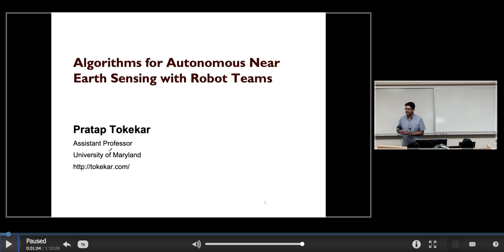
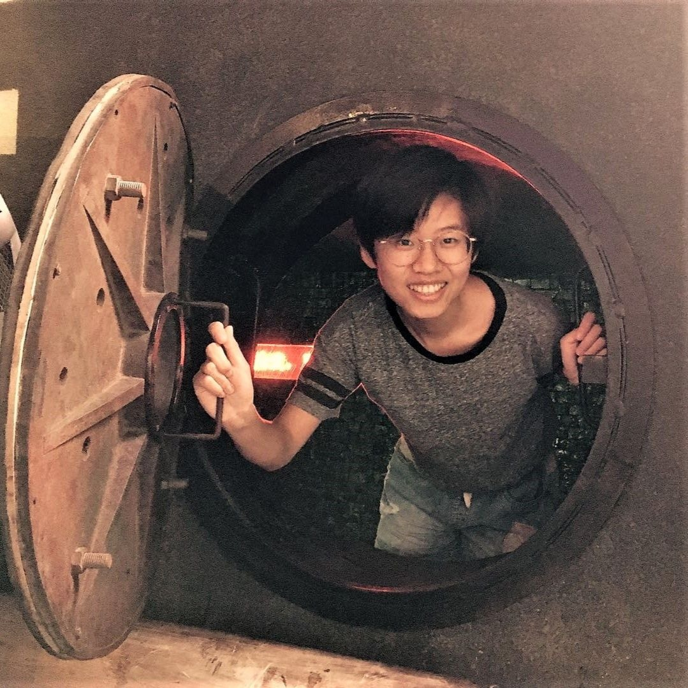

The Robotics Algorithms & Autonomous Systems (RAAS) Lab is part of the University of Maryland. Previously, the lab was located at Virginia Tech.
We design algorithms and build systems to enable teams of robots to act as sensing agents. Our research is at the intersection of theory and systems and is motivated by real-world applications to environmental monitoring, infrastructure inspection, and precision agriculture.
The lab is affiliated with the Department of Computer Science, UMIACS, and the Maryland Robotics Center at the University of Maryland.
See more about our research here.
Talk delivered in Fall 2019 at the PRG Robotics Seminar covering some of our group's recent work.
Some recent videos from our group.
Pratap Tokekar is an Assistant Professor in the Department of Computer Science and UMIACS at the University of Maryland. Between 2015 and 2019, he was an Assistant Professor at the Department of Electrical and Computer Engineering at Virginia Tech. Previously, he was a Postdoctoral Researcher at the GRASP lab of University of Pennsylvania. He obtained his Ph.D. in Computer Science from the University of Minnesota in 2014 and Bachelor of Technology degree in Electronics and Telecommunication from College of Engineering Pune, India in 2008. He is a recipient of the NSF CAREER award (2020) and CISE Research Initiation Initiative award (2016). He serves as an Associate Editor for the IEEE Transactions on Robotics, IEEE Transactions of Automation Science & Engineering, and the ICRA and IROS Conference Editorial Board.
M.S. Student
Ph.D. Student
Ph.D. Student
Ph.D. Student
Ph.D. Student
Ph.D. Student
Ph.D. Student
Ph.D. Student
CAREER: Secure, Resilient, and Risk-Aware Multi-Robot Coordination
CDS&E: A Computational Framework for Parsimonious Sonar Sensing
CPS: Medium: Multi-Scale Planning in Robot Teams for Persistent Monitoring and Intervention in Precision Grazing
Joint Perception and Temporal Logic Planning for Distributed Agents in Dynamic Environments
FW-HTF: First Person View and Augmented Reality for Airborne Embodied Intelligent Cognitive Assistants